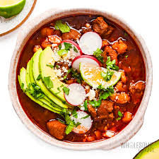

Pozole was first documented by a 16th century Spanish Franciscan missionary who arrived in Mexico in 1529. They came to mexico to undermine their gods and convert the indigenous people to Christianity. In aztec history, privledged citizens and rulers would have pozole to celebrate gods, good harvests and changing seasons. Pozle was historcialy made with human flesh as sarcifice and symbolized “the rite where the permanent duality of the Nahua’s mystical vision was verified: origin and end, heaven and earth, day and night.

Pozole is a traditional soup or stew from Mexican cuisine. It is made from hominy with meat, and can be seasoned and garnished. I got this recpie from Simply Recipes.
Ingredents
For soup
4 ounces dried guajillo or ancho chiles, or a combination of both
salt
1 large (108 ounce, 6 lb 12 oz, 3 kg) can white hominy, drained and rinsed
3 pounds pork shoulder, cut into 1 to 1 1/2 inch cubes, make sure to use a cut well marbled with fat